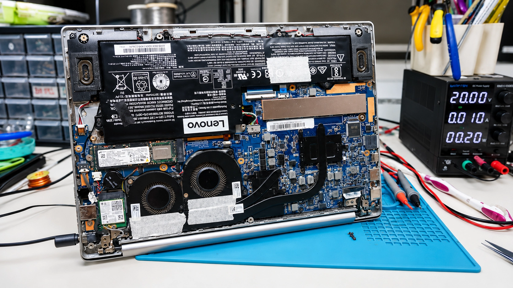
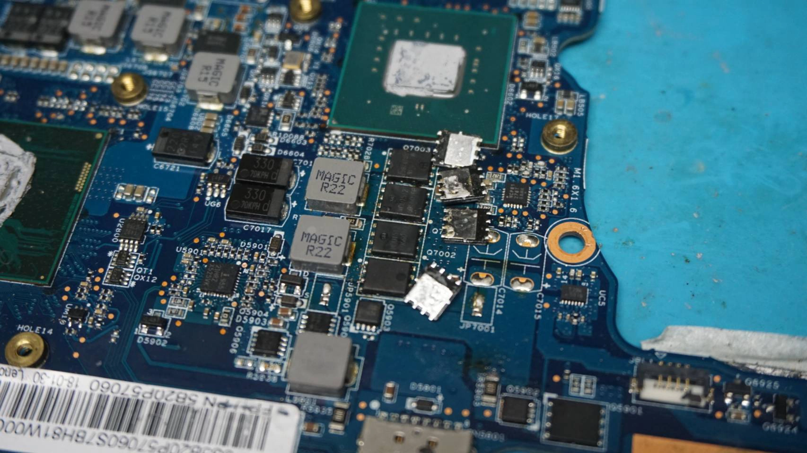
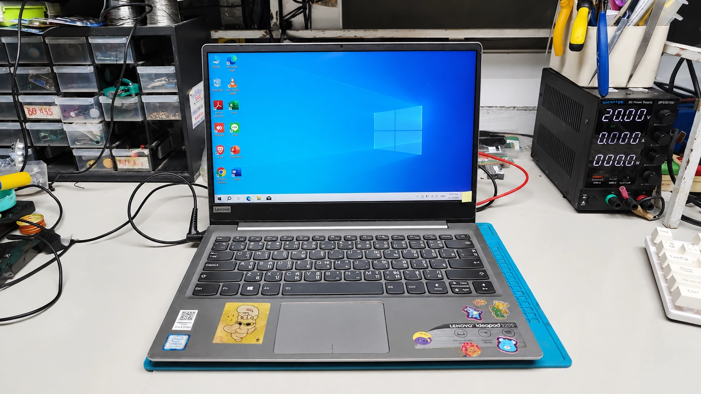

1. การตรวจเช็คอาการก่อนซ่อม
ลูกค้าส่งโน๊ตบุ๊ค Lenovo Ideapad 320S เข้ามาด้วยอาการเปิดไม่ติด กดเปิดเครื่องแล้วไม่มีไฟสถานะใดๆ ติดขึ้นมา เสียบสายชาร์จไฟก็ไม่เข้า ช่างจึงทำการแกะฝาหลังเพื่อรื้อฝาเครื่องและถอดแบตเตอรี่ออก จากนั้นทำการจ่ายไฟตรงด้วย DC Power Supply พบว่ามีกระแสไฟตัดการทำงานทันที (Short Circuit) แสดงว่ามีจุดช็อตบนเมนบอร์ด

2. ขั้นตอนการซ่อมและแก้ไข
หลังจากการไล่วงจรไฟหลัก (Main Line) ด้วยเครื่องมือวัดไฟ พบว่าจุดที่ช็อตลงกราวคือ ภาคจ่ายไฟการ์ดจอ (GPU VCORE) โดยมีตัว MOSFET ชิปช็อตเสียหาย ส่งผลให้ไฟเลี้ยงระบบไม่สามารถกระจายไปเลี้ยงส่วนอื่นๆ ได้ ช่างได้ทำการเปลี่ยน MOSFET ที่ช็อตออก จากนั้นนำตัวใหม่ที่มีสเปกตรงตามไดอะแกรมวงจรเข้าเปลี่ยนแทนที่

3. สรุปผลงานซ่อมและการทดสอบ
หลังจากทำการเปลี่ยน MOSFET และประกอบเครื่องกลับ พร้อมกับเปลี่ยนซิลิโคนระบายความร้อนใหม่เรียบร้อยแล้ว เมื่อทดลองจ่ายไฟเข้าเครื่อง พบว่าแรงดันไฟกลับมาปกติที่ 20V (กระแสสแตนด์บายปกติ) เครื่องสามารถกดเปิดติด บูตเข้าสู่ Windows ได้สมบูรณ์ ช่างทำการ Stress Test ทดสอบโหลดการ์ดจอและความร้อนต่อเนื่องเป็นเวลา 2 ชั่วโมง ผ่านเกณฑ์เรียบร้อย พร้อมส่งมอบคืนลูกค้าครับ!

คำถามที่พบบ่อย (FAQ)
ซ่อมโน๊ตบุ๊คเชียงใหม่ Computer Services
งานซ่อมได้มาตรฐาน อะไหล่แท้ตรงรุ่น ตรวจเช็คฟรี ประสบการณ์มากกว่า 10 ปี